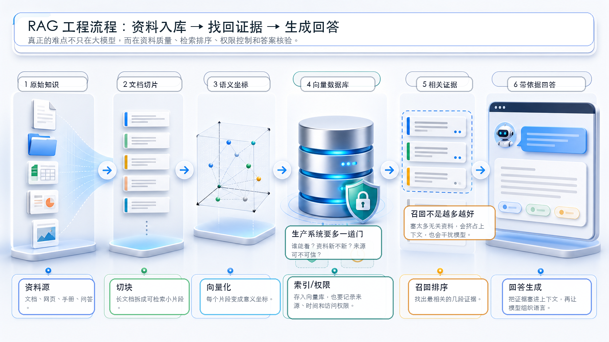

RAG
检索增强生成
为什么真正有用的 AI，往往要先“查资料”再回答？
模型不知道私有资料、最新资料时，先把相关证据找出来。
Embedding、向量数据库、搜索索引、上下文窗口和大模型。
RAG 能降低幻觉风险，但不能自动保证答案正确。
为什么这个概念重要？
大模型很会组织语言，但它有一个天然限制：它并不会自动知道你公司的内部制度、今天刚更新的政策、某个客户的最新订单状态，也不一定能准确记住训练资料里的每个细节。
RAG 解决的就是这个问题：在回答之前，先从外部资料库里找出相关内容，再把这些内容交给大模型，让它基于资料回答。它像给模型配了一个“可查资料的书包”。
它改变了 AI 产品的边界。没有 RAG，很多应用只能像一个会聊天的百科全书；有了 RAG，模型才更像一个能读公司资料、查证据、给出处的工作助手。
一个直观类比：开卷考试
想象你参加一场考试。闭卷考试时，你只能靠记忆答题；如果题目问到一本新教材里的内容，你很可能答错或编一段看起来很像答案的话。
RAG 更像开卷考试。老师允许你带教材，但有两个条件：第一，你要先翻到正确页；第二，你要读懂材料，而不是把整本书全抄上去。RAG 里的“检索”负责翻到相关页，“生成”负责把材料整理成自然语言答案。
所以，RAG 的关键不是让模型“变得全知”，而是让它在回答前先看到可信资料。资料找对了，答案才有基础；资料找错了，模型再会说话也可能把错资料讲得很流畅。
工作原理（深入浅出）
把文档、网页、手册、FAQ 放进系统。长文档通常先切成小块，方便精确检索。
每个资料块可以做关键词索引，也可以用 Embedding 变成向量，存入向量数据库。
系统把问题也变成查询，找出最相关的几段资料，而不是把所有资料都塞给模型。
相关资料被放进上下文窗口，模型根据这些证据组织答案，最好同时给出处。
这里有一个常见误会：RAG 并不等于“让模型联网”。RAG 可以用公开网页，也可以只用企业内部文档；它的本质是“先检索，再生成”。检索的数据从哪里来，是另一个工程选择。
真正的生产系统还要处理更多细节：资料是不是最新？用户有没有权限看？相似度最高的结果是否真的有用？答案有没有引用错误？这些问题决定了一个 RAG 系统是“演示好看”，还是“工作中可靠”。

关键术语解释
| 术语 | 专业解释 | 白话解释 |
|---|---|---|
| RAG | Retrieval-Augmented Generation，检索增强生成。 | 先查资料，再让 AI 写答案。 |
| Retrieval | 从知识库、搜索索引或数据库中召回相关内容。 | 像在教材里翻到可能有答案的页。 |
| Generation | 大模型根据问题和检索内容生成自然语言回复。 | 把资料读懂后，用人话讲出来。 |
| Chunk | 把长文档切成较小、可单独检索的片段。 | 把一本书拆成一张张知识卡片。 |
| Embedding | 把文本等内容转换成向量表示，用于语义相似度检索。 | 给每段资料做“意思坐标”。 |
| Vector Database | 专门存储和快速检索向量的数据库。 | 按“意思相近”找资料的图书馆。 |
| Context Window | 模型一次能看到的输入范围。 | 模型桌面上能摊开的资料面积有限。 |
| Grounding | 让模型输出基于外部事实来源，而不只依赖参数记忆。 | 把答案“钉”在资料上，减少乱编。 |
一个真实应用案例
假设一个企业客服助手要回答：“我的订单显示到达中转场后两天没有变化，下一步怎么办？”
如果只靠大模型记忆，它可能给出一段泛泛的安慰话。但 RAG 系统会先去知识库里找：中转异常处理规则、延误判定标准、客户告知话术、人工工单触发条件。它可能找到几段真正相关的内部资料，再把它们交给模型。
然后模型生成回答：先说明可能原因，再告诉用户可以等待多久、如何查询、什么情况需要转人工。更好的系统还会显示引用来源，比如“依据：中转异常处理规范，第 3.2 条，更新时间 2026-06-15”。
常见误区（非常重要）
不是。联网搜索只是资料来源之一。RAG 也可以完全基于企业内部文档、数据库或离线知识库。
不是。RAG 能降低模型凭空编造的概率，但如果检索错、资料旧、提示写得差，模型仍然可能误读或编造。
不是。上下文窗口有限，塞太多无关内容会挤掉重点，也会让模型被噪音干扰。
不一定。语义相近只代表“可能相关”，还要看来源、时间、权限、上下文和业务规则。
不能简单替代。订单号、余额、库存这类精确数据，通常需要结构化数据库或工具调用，而不是只靠相似度搜索。
不是。好系统要持续评估召回率、答案准确率、引用质量、资料更新和用户反馈。
总结（3句话）
- RAG 的本质，是让大模型在回答前先检索外部资料，再基于资料生成答案。
- 它把 Embedding、向量数据库、搜索索引和大模型连接起来，是企业 AI 应用落地的关键桥梁。
- RAG 能减少“凭空编”，但不能自动保证正确；资料质量、检索质量、权限控制和答案核验同样重要。
复习问题（必须）
1. 为什么说 RAG 像“开卷考试”，而不是让模型“突然变聪明”？
2. 如果一个 RAG 系统总是召回不相关资料，最终答案会出现什么问题？你会优先检查哪几个环节？
3. 为什么订单号、库存数量、账户余额这类精确问题，通常不能只靠向量检索来回答？